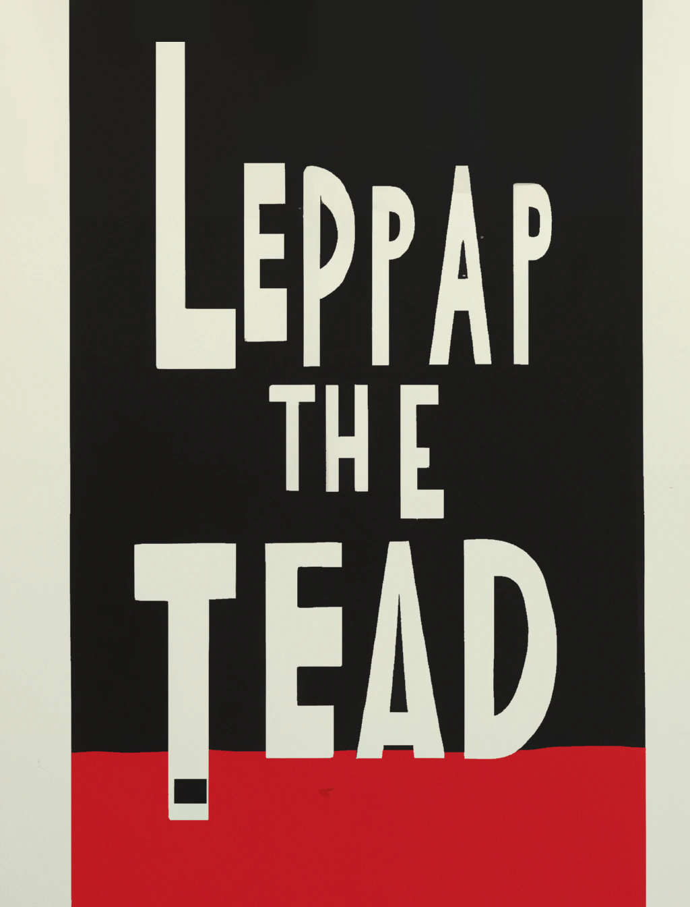
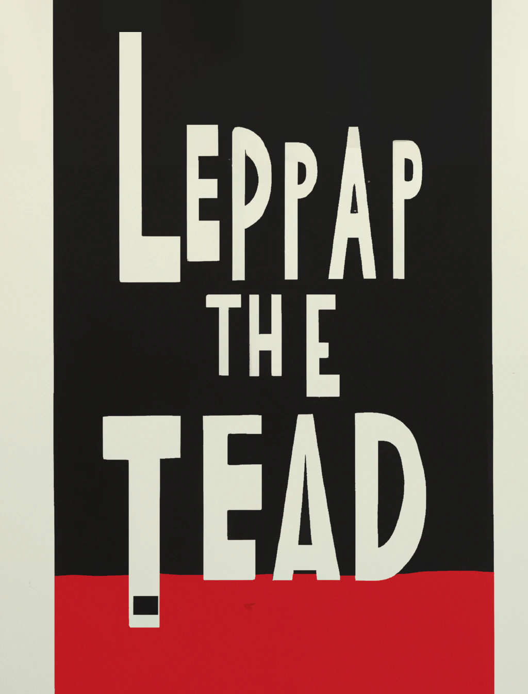

Dufour
Foundation

Welcome to the Archive of the Michel Dufour Foundation, an online gallery that aims to showcase the entire collection of works created by the renowned graphic designer Michel Dufour. As a pioneer of the minimalist and modernist approach to design, Dufour's legacy has had a profound impact on the graphic design world, inspiring countless designers and artists around the world.
Our archive is dedicated to preserving and promoting Dufour's work, spanning from his earliest projects to his final works. Through this gallery, you will be able to explore his various design projects, including his iconic poster designs, book covers, corporate identities, and editorial designs. The archive also includes a wide range of materials, such as sketches, notes, photographs, and other related documents, that provide insights into Dufour's design process and the context in which he worked.
We invite you to browse through the Archive of the Michel Dufour Foundation and discover the works of one of the most innovative and influential graphic designers of the 20th century.
Back to Home


 



The Michel Dufour Foundation website was created with the aim of promoting the life and work of graphic designer Michel Dufour. The website was designed and developed by a team of skilled professionals who are passionate about design and committed to preserving the legacy of Michel Dufour. The website was built using the latest web technologies and optimized for the best possible user experience. The fonts used on the website were carefully selected to reflect the aesthetic values of Michel Dufour's work. The content of the website, including images and text, was curated by the Michel Dufour Foundation with the aim of providing an accurate and comprehensive representation of Michel Dufour's life and work. All images and text on the website are copyrighted by the Michel Dufour Foundation or their respective owners. The Michel Dufour Foundation is committed to ensuring the long-term preservation and accessibility of Michel Dufour's work. The Foundation welcomes feedback and suggestions from users of the website on ways to improve the user experience and enhance the representation of Michel Dufour's legacy.